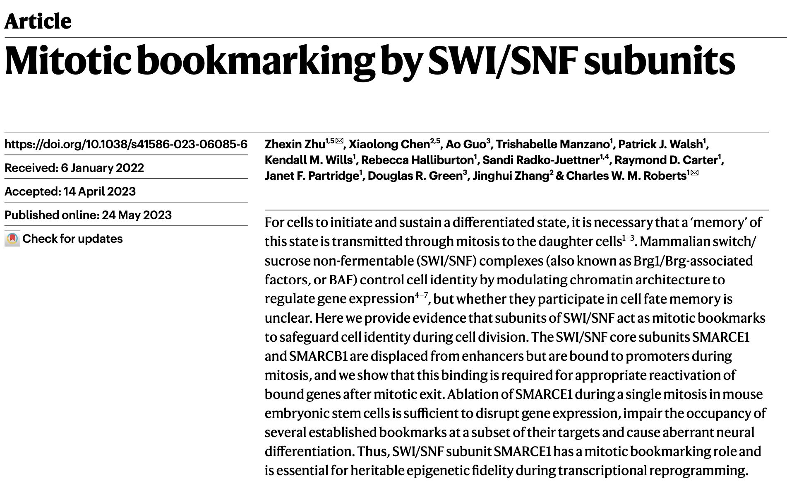
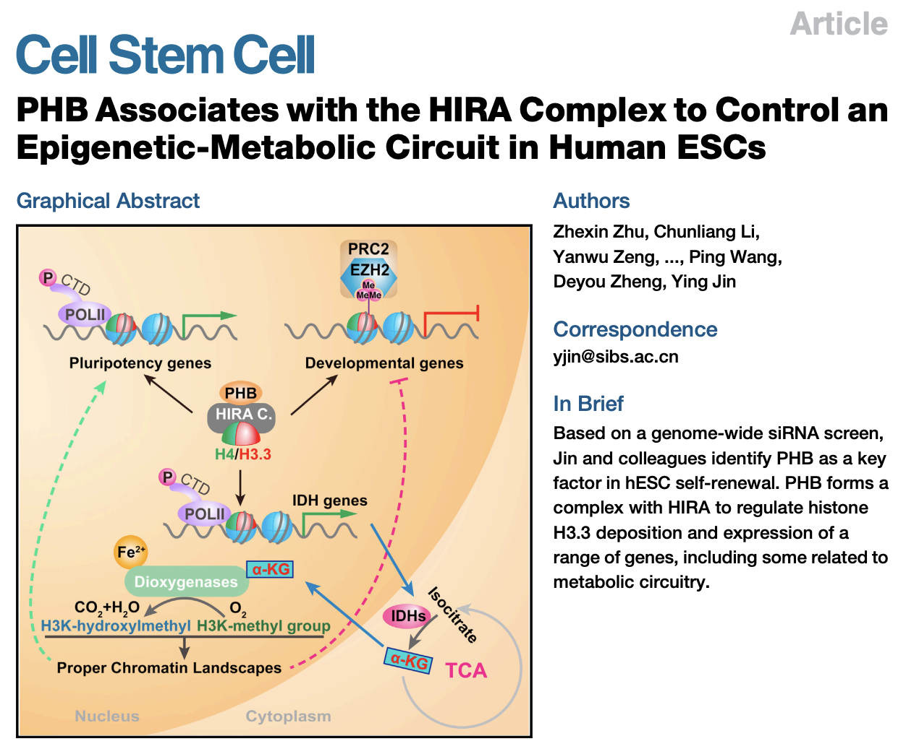

Dr. Zhexin Zhu focuses on systematically studying the role of chromatin regulators in epigenetic control using stem cells and tumor models. He has published as first or corresponding author in Nature and Cell Stem Cell. Notably, his study on the PHB/HIRA chromatin complex in human embryonic stem cells uncovering a novel "epigenetic-metabolic" circuit (Z. Zhu et al., Cell Stem Cell, 2017) received an Exceptional Recommendation from F1000. His work on the SWI/SNF chromatin remodeling complex maintaining epigenetic memory and determining cell fate across generations (Z. Zhu et al., Nature, 2023) was also recommended by F1000 and highlighted in Nature Reviews Molecular Cell Biology.
The Zhu Lab currently focuses on integrating gene editing, biochemistry, and epigenetics using newly developed experimental platforms—including human synthetic "embryo-like" models, reversible protein degradation mice, and mitotic-specific protein degradation mice—to study development and aging disease models: